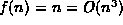
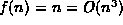
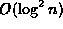
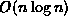
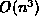
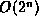

Data Structures and Algorithms
with Object-Oriented Design Patterns in C++
Data Structures and Algorithms
with Object-Oriented Design Patterns in C++Certain conventions have evolved which concern how big oh expressions are normally written:
Of course, in order for a particular big oh expression to be
the most useful, we prefer to find a tight asymptotic bound
(see Definition  ).
For example, while it is not wrong to write ,
we prefer to write f(n)=O(n), which is a tight bound.
).
For example, while it is not wrong to write ,
we prefer to write f(n)=O(n), which is a tight bound.
Certain big oh expressions occur so frequently that they are given names.
Table lists some of the commonly occurring
big oh expressions and the usual name given to each of them.
| expression | name |
| O(1) | constant |
|
| logarithmic |
|  | log squared |
| O(n) | linear |
|  | n log n |
| quadratic | |
|  | cubic |
|  | exponential |
 Copyright © 1997 by Bruno R. Preiss, P.Eng. All rights reserved.
Copyright © 1997 by Bruno R. Preiss, P.Eng. All rights reserved.